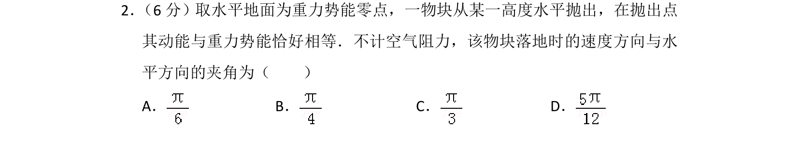
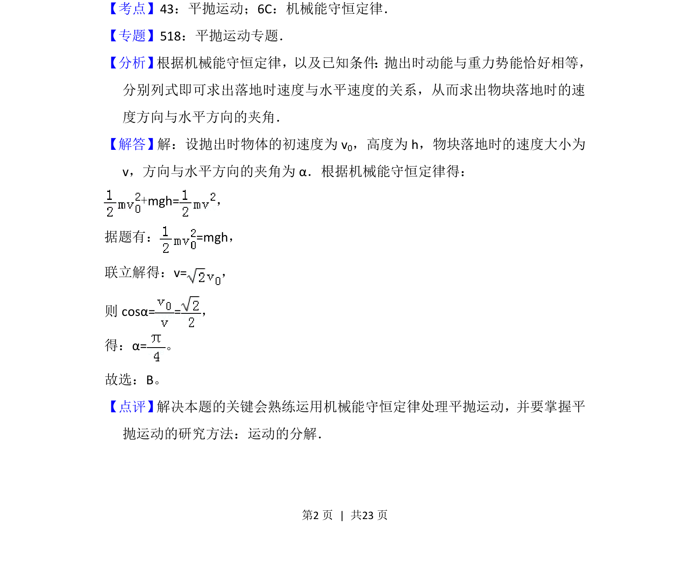

2014-新课标Ⅱ-02
考点：平抛运动 机械能守恒定律
题面

摘要
一物块水平抛出时动能与重力势能相等，根据机械能守恒求落地速度方向与水平方向的夹角。
关联考点
答案与解析


📄 原 PDF 第 2 页：
素材/真题/吉林/2008-2024·（吉林）物理高考真题/2014年高考物理试卷（新课标Ⅱ）（解析卷）.pdf
题干文本
2． （6分）取水平地面为重力势能零点，一物块从某一高度水平抛出，在抛出点 其动能与重力势能恰好相等．不计空气阻力，该物块落地时的速度方向与水 平方向的夹角为（ ） A．B．C．D．
解析文本
【考点】43：平抛运动；6C：机械能守恒定律．菁优网版权所有 【专题】518：平抛运动专题． 【分析】 根据机械能守恒定律，以及已知条件 ： 抛出时动能与重力势能恰好相等， 分别列式即可求出落地时速度与水平速度的关系，从而求出物块落地时的速 度方向与水平方向的夹角． 【解答】解：设抛出时物体的初速度为v0，高度为h，物块落地时的速度大小为 v，方向与水平方向的夹角为α．根据机械能守恒定律得： +mgh=， 据题有：=mgh， 联立解得：v=， 则cosα==， 得：α=。 故选：B。 【点评】 解决本题的关键会熟练运用机械能守恒定律处理平抛运动，并要掌握平 抛运动的研究方法：运动的分解．